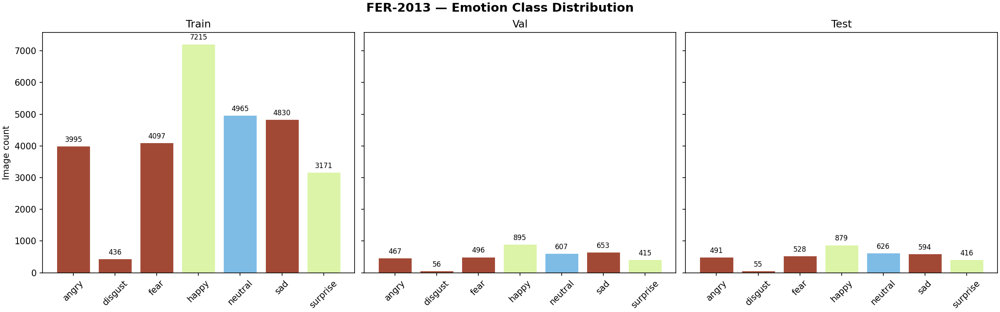
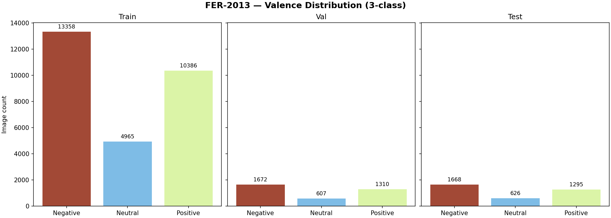

Development of valence recognition for human face image data
https://github.com/jurdabos/ratemyhuman
Torda Balázs · 92128244
course: DLBDSEAIS02 · tutor: Martin, Simon, Prof. Dr.
Finalized for submission on 1 Apr 2026
1 Problem & Goal
The marketing department needs a tool that detects the emotional state of
viewers watching advertisements — from a single face image.
Rather than classifying granular emotions, we adopt a threefold valence model
— Negative Neutral
Positive — which provides a cleaner, more actionable signal.
System output per image
- Valence label (negative/neutral/positive)
- Confidence score for the prediction
- The full 7-class emotion probability distribution for transparency
Key design decisions
- Pretrained model — no training from scratch; leverage state-of-the-art weights
- Decoupled pipeline — face detection, emotion inference and valence mapping are independent stages
- Built-in validation — quality metrics are a core component, not an afterthought
2 / 10
2 Frameworks & Tools
Why PyTorch nightly? The RTX 5070 Ti (Blackwell, sm_120, compute capability 12.0) requires
nightly builds — TensorFlow does not support this GPU in any release channel.
uv manages the nightly index and dependency overrides via pyproject.toml.
3 / 10
3 System Architecture
The system is composed of five major classes (cf. concept note UML):
| Class | Module | Responsibility |
|---|
ValenceDetector |
model.py |
Orchestrates face detection → emotion inference → valence mapping |
ValenceResult |
model.py |
Dataclass holding label, confidence, emotion & valence scores |
ValidationRunner |
validate.py |
Batch inference on labelled data, computes all metrics |
ValidationReport |
validate.py |
Dataclass holding accuracy, F1, MCC, confusion matrix, per-class metrics |
GradioInterface |
app.py |
Web UI: image upload → prediction → HTML result display |
All valence constants (VALENCE_MAP, VALENCE_ORDER, VALENCE_COLOURS,
EMOTION_PALETTE) are defined once in model.py and imported by every other module
— a single source of truth with zero duplication.
4 / 10
4 Classification Pipeline
The three-stage pipeline follows what has been proposed in the concept note:
1 Face Detection
MTCNN
→
2 Emotion Inference
ViT (85.8M params)
→
3 Valence Mapping
7-class → 3-class
Stage 1 — Face Detection
- MTCNN from
facenet-pytorch
- Crops and aligns the largest face to 224×224
- Returns
None if no face is found
Stage 2 — Emotion Inference
Stage 3 — Valence Mapping
- P(Neg) = P(angry) + P(disgust) + P(fear) + P(sad)
- P(Neu) = P(neutral)
- P(Pos) = P(happy) + P(surprise)
Design rationale
- Each stage is independently testable and replaceable
- The mapping is transparent and auditable
- Surprise → Positive is fixed to the advertising context
5 / 10
5a Dataset — FER2013
Dataset overview
- Source: Kaggle — FER-2013
- Size: ~35,887 grayscale 48×48 images
- Labels: 7 emotion classes
- Splits: train (~28k) / val (~3.5k) / test (~3.5k)
- Known issue: ~65% inter-annotator agreement (label noise)
- Data versioned with DVC and stored on AWS S3
Why include the full train/val/test split?
The pretrained ViT model was fine-tuned on FER2013's train split
by its original authors. We do not train or fine-tune any model ourselves —
our pipeline uses only the test split as an independent benchmark.
Including all three splits serves three purposes:
- Model bias context — the training distribution reveals biases the
model inherited (e.g. "happy" dominates, "disgust" is rare at ~1.5%)
- Evaluation integrity — showing separate splits proves the test
images were never seen during the model's own training
- Structural imbalance — class imbalance is a property of FER2013
itself, consistent across all splits, not a sampling artefact
Emotion class distribution across splits

6 / 11
5b Valence Distribution
The 7 emotion classes are aggregated into 3 valence classes using the mapping from the concept note:

Negative dominates across all splits (~47%), followed by
Positive (~36%) and Neutral (~17%).
This imbalance is why we report both macro-averaged and weighted F1 scores in our validation.
7 / 11
6 Pretrained Model Integration
Model card
| Property | Value |
|---|
| Model | trpakov/vit-face-expression |
| Architecture | Vision Transformer (ViT) |
| Parameters | 85.8M |
| Input size | 224 × 224 RGB |
| Output | 7-class softmax |
| Fine-tuned on | FER2013 |
Integration approach
- Model loaded via
ViTForImageClassification.from_pretrained()
- Image preprocessing via
ViTImageProcessor.from_pretrained()
- Lazy singleton pattern in the Gradio app — model loaded on first request
- All inference in
torch.no_grad() context
Face detection
- MTCNN from facenet-pytorch
- Selects largest face, 20px margin, resized to 224×224
- PyTorch-native — runs on the same GPU device as the ViT model
# Minimal usage (from model.py)
detector = ValenceDetector(device="cuda")
result = detector.classify("fullpathtoREALface.png")
print(result)
# → Valence: Positive (93.2%) | Top emotion: happy (90.1%)
8 / 11
7 Validation Results
Evaluated on the FER2013 test split — 2,999 of 3,589 images
(590 skipped where MTCNN could not detect a face in the 48×48 images).
Per-class breakdown
| Valence | Precision | Recall | F1 |
|---|
| Negative | 0.87 | 0.89 | 0.88 |
| Neutral | 0.69 | 0.68 | 0.68 |
| Positive | 0.88 | 0.92 | 0.90 |
Key observations
- Positive class performs best (F1 = 0.90)
- Neutral is hardest to classify (F1 = 0.68)
- MCC of 0.728 confirms strong multi-class discrimination
- Accuracy far exceeds both baselines
9 / 11
8 Code Quality & Testing
Code organisation
src/ratemyhuman/
model.py # ValenceDetector, ValenceResult
validate.py # ValidationRunner, ValidationReport
explore.py # Dataset exploration, plots
app.py # Gradio web UI
cli.py # Click CLI (5 subcommands)
tests/
test_model.py # 30+ tests
test_validate.py # 25+ tests
test_explore.py # 20+ tests
test_cli.py # 20+ tests
test_app.py # 10+ tests
CLI interface
uv run ratemyhuman classify img.png
uv run ratemyhuman explore
uv run ratemyhuman validate
uv run ratemyhuman demo --port 8888
uv run ratemyhuman push -m "message"
Testing
- 109 unit tests (no GPU required)
- 3 integration tests (GPU + model weights)
- ~90% code coverage
- Separate markers:
-m "not slow" vs -m "slow"
Code documentation
- Every function has a multi-line docstring
- Inline comments for explanations
- All modules have module-level docstrings
- PEP 8 compliance, 120-char line limit
10 / 11
9 Iterative Optimisation & Summary
What was optimised
- GPU environment: Resolved Blackwell sm_120 compatibility with PyTorch nightly + CUDA 12.8; overrode facenet-pytorch's stale dependency pins via
uv
- MTCNN tuning: Set
margin=20, select_largest=True, post_process=False for optimal face cropping from low-res FER2013 images
- DVC workflow: Automated
push command handles new file detection, DVC/git staging, pre-commit hook retries, and post-commit amends
- Gradio integration: Lazy-loaded singleton detector to avoid model re-loading on each request; auto-predict on image change
- Validation pipeline: Added MCC metric, baseline comparisons, misclassified sample visualisation, and DVC-tracked output plots
- Test coverage: Expanded from initial smoke tests to 109 unit tests at ~90% coverage with mocked pipelines
Development timeline
| Date | Milestone |
|---|
| 2026-02-11 | Kick-off: uv init, scaffolding, dotfiles, pre-commit hooks |
| 2026-03-25 | Data ingestion via DVC (FER2013 → S3) |
| 2026-03-26 | Dataset exploration, model integration, validation piping |
| 2026-03-27 | Documentation, Gradio web UI |
| 2026-03-28 | Test suite to ~90% coverage |
Summary: All components from the concept note have been implemented — face detection,
emotion inference, valence mapping, validation framework, Gradio web UI, CLI, and Jupyter notebook.
The system achieves 82.86% accuracy (vs. 33.3% random baseline) on 2,999 FER2013 test images with
strong F1 and MCC scores.
11 / 11